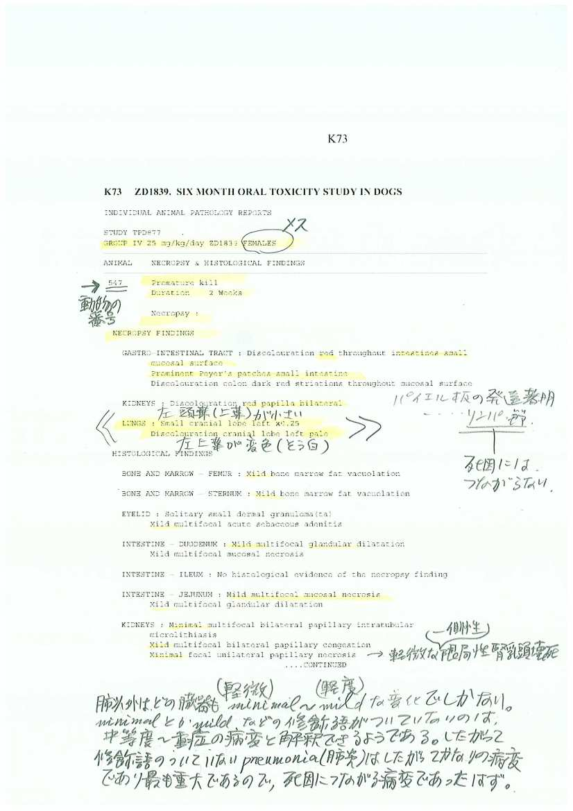
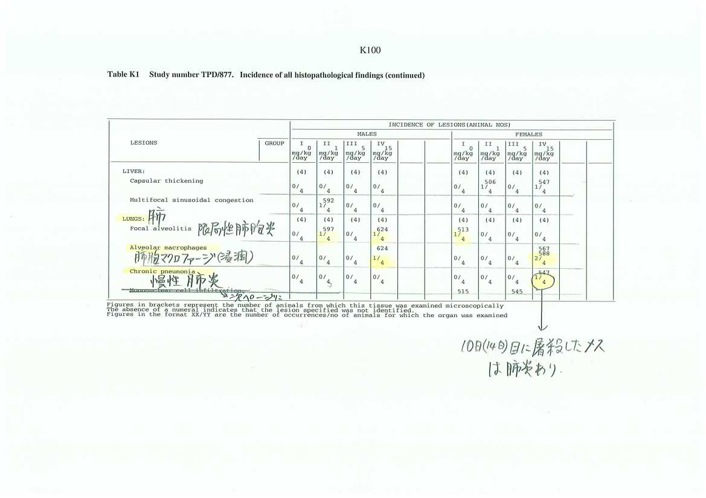
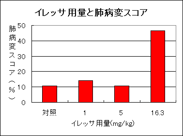

これまで、アストラゼネカ社と国が、提出を渋りに渋ってきた動物実験のデータが、この３月１日についにアストラゼネカ社のホームページに掲載された。
一つの実験で、ほぼ500ページ〜700ページに達するものもあり、合計2000ページあまりにおよぶ膨大な報告書である。とりあえず、肺炎の所見が記載されている可能性のある最も重要なイヌの6か月の実験結果をみてみた。
これまで、肺相対重量の増加と、白血球増加、発熱などの所見から、「あるはず」と考えていた肝腎の「肺炎の所見」が、意外とあっさりと見つかった。
まだ、イヌの6か月経口毒性の結果しか分析できていないが、3月7日には、西日本イレッサ訴訟の第3回公判が開かれる。
メーカーも国も、ひた隠しに隠していた、この動物実験の肺炎のデータが発見されたことを、とりあえず報告したい。
肺炎の所見は、25mg/kgのイレッサが投与され、10日目（or今回の報告書では14日目）に食餌摂取が少なく体重が減ってきたので屠殺した雌イヌ（No547）に認められた。屠殺するのは、放置しておくと確実に死ぬと判断された場合であり、死亡したという扱いになる。イヌの25mg/kgは、適切な血中濃度（曲線下面積＝AUC）で換算すると、ヒト用量（250mg）の1.8倍にしかすぎない。新薬承認情報集では、11日より15mg/kg/日に減量した。10〜14日しか使っていないのに、もうすでに慢性の肺炎の所見があったという（Ｋ７３、Ｋ７４）。とくにＫ74の肺の所見が病理組織学的な所見であり、これで｢慢性肺炎｣となっている。
どうやら、屠殺するのが早すぎたせいか、腎臓の乳頭壊死にしても軽微である。肺以外に臓器の所見はいずれも軽微〜軽度でしかないので、死因につながったとは思えない（Ｋ７３）。
他の所見にはたいてい、軽微（minimal）とか軽度（mild）などの修飾語がついている。ところが、「慢性肺炎」にはこうした修飾語がついていない。したがって、一番重い病変ということになる。こうしたことを考慮に入れると、肺炎が死因と考えられるのではないか。
腎の乳頭壊死（軽微）や心電図上、房室ブロックの所見などは１頭にしか生じていなくとも「イレッサによるもの」としている。この「肺炎」がイレッサと無関係としてよいはずがない。
病理所見をまとめた表（Ｋ１００、Ｋ１０１）には、肺の病変がたくさんあげられている。ところが、新薬承認情報集にはこの表がそっくり欠落している。
特別軽重を考慮せずに諸件数だけで比較すると、5mg/kg群までは肺の所見は2つずつだが、高用量群（15mg/kg群）では６つの所見がある。これだけでも、高用量群で肺の所見が多いということが分かる。
所見を個々に検討すると、限局性肺胞炎と単核細胞浸潤は対照群にもイレッサ群にも同程度認められているので、特異的所見とはいえないであろう。しかし、対照群や１mg/kgには認められていない病変が、中等量群や高用量群には認められている。
肺胞内マクロファージ浸潤が高用量群（16.3mg/kg群）のみの3例に、限局性肺胞中隔化生がやはり高用量群の1例に認められている。また、5mg/kgの1例には限局性肺胞出血が認められている。
肺胞中隔とは、肺胞間の隔壁、すなわち間質である。化生とは、正常の組織から、正常には存在しない組織に置き換わることを意味する。したがって、肺胞が間質性肺炎に置き換わったことを意味する。「interstitial proliferation：間質増生」に相当する所見である。イレッサのEGFR阻害作用による結果と考えるべきである。
マクロファージの存在は、EGFR阻害により正常の肺胞細胞が再生しないため排除できなくなった異物を貪食するために浸潤したものであろう。屠殺したイヌは別に集計して肺相対重量の増加が認められている。対照群やイレッサ低用量群にはなく、高用量群の8例中3例にのみ認められたこの所見がイレッサと密接に関係しないとどうして判定できるのであろうか。出血にしても、イレッサはAPTT（活性部分トロンボプラスチン時間）を延長させる。出血傾向はそのためではないか。これらは大いに関係ある所見であろう。
25mg/kg投与2週間目に屠殺したイヌもそうであったが、5mg/kgで18週目に屠殺したイヌは、発熱まであったのに、死亡につながる所見がほとんどない。これら屠殺したイヌでは死因につながる病変が出る前の早期屠殺、つまり屠殺が早すぎたのではないかと思われる。屠殺時には、採血も可能であり、白血球数や血液化学の結果も把握すべきであるが、そのデータも出ていない不完全な実験である。その意味で極めて信頼性に乏しい実験といえる。
「慢性肺炎」の所見は、メーカーにとっては、2週間でできる所見ではないから、イレッサとは無関係といいたいのであろう。しかし、間質性の変化や、肺胞傷害の結果と見られる所見などをあわせて、イレッサのEGFR阻害によるとみられる所見が明らかに高用量群には多いので、一見慢性と見える肺炎所見も無関係とすることはできないであろう。
しかも、個別の症例カードだけでなく、組織学的所見のまとめの表にも記載されている上記の病理所見が新薬承認情報集に全く記載されてないのはどういう理由か。肺の所見だけが、そっくり新薬承認情報集（承認申請資料概要）の病理所見のまとめの表から除かれている。これは意図的に、まとめの表から除かれた、としかいいようがない。これらの操作について、国の審査でも見抜けなかったのか、気付いていて指摘しなかったのか。いずれにしても、これでは国として、十分審査したことにはならないだろう。
各所見を、軽微1点、軽度2点、中等度（何もなし3点）、重度（何もなしだが死因につながりうるもの）を4点として、肺所見をスコア化して、28点満点に対する％でグラフにあらわした（図）。
高用量群のスコアが著しく高い。高用量群といっても、ヒト常用量の1.2倍程度である。その用量で8頭中１頭に肺炎があり、間質の増殖所見や、マクロファージの浸潤など、イレッサのEGFR阻害と関係する肺所見が５頭のイヌに、合計6件現れていた。
これほど関連の深い肺毒性の所見をどうして病理所見から除いたのであろうか。その データをこれまでどうして出し渋っていたのであろうか。答えはあきらかであろう。
なお、ここで、毒性試験データの見方を解説しておきたい。６ヵ月イヌ毒性試験の方法や、まとめがあり、主要所見に関する図表があり、ここのイヌの詳細なデータが添付資料として、Ａ〜Ｌまである。そのうちのＫが病理所見である。
である。
毒性試験データそのものは、アストラゼネカのホームページへ。